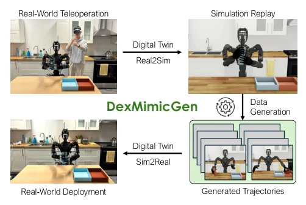
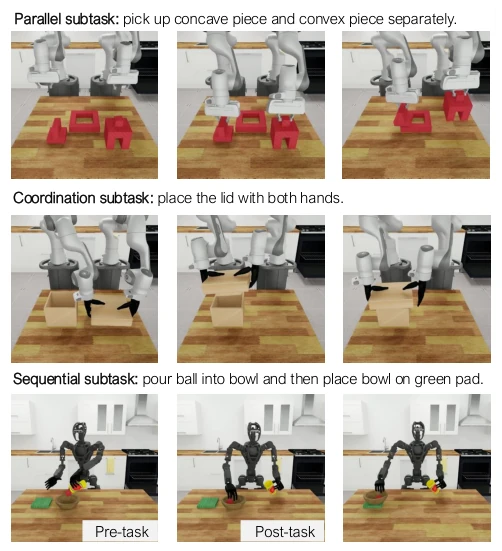
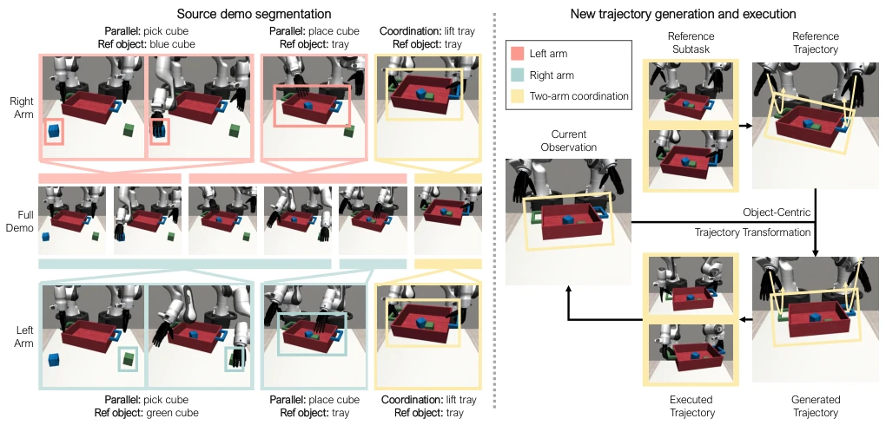
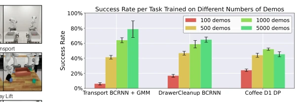
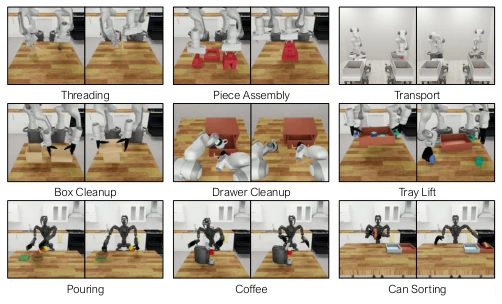
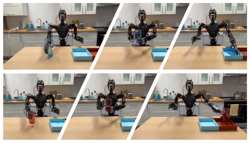
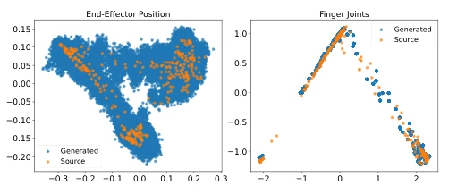

This paper presents a 'simulation prescription' for the data hunger of dual-hand dexterous robots. DexMimicGen is essentially a complexified version of MimicGen, attempting to 'clone' massive amounts of data within simulation using a small number of human demonstrations. The highlights are indeed impressive: 60 human demos generate 21K data, and real-robot deployment achieves a 90% success rate, significantly outperforming pure human data usage. However, the drawbacks are apparent: it relies heavily on the fidelity of the simulation physics engine; SE(3) transformation assumptions may fail in complex contact scenarios; and 'digital twin' construction itself requires extensive calibration work, raising the question of whether this constitutes another form of 'labor exchanged for computing power'? For non-rigid or high-friction scenarios, this pose-transformation-based generation strategy may appear overly idealized. Overall, this is a typical example of addressing data bottlenecks through engineering means, though generalization capabilities require validation across more tasks.
Imitation learning is an effective method for teaching robot skills, yet data collection remains a core bottleneck [1, 2]. For single-arm robots, teams have already collected substantial data through multi-person collaboration [2, 5-8]; however, extending this to dual-hand dexterous or humanoid robots drastically increases the difficulty of simultaneously controlling two arms and five-fingered hands [9-14]. Existing teleoperation interfaces are costly and difficult to scale [9-14]. While simulation data generation has successful precedents in the single-arm domain [15-17], directly applying MimicGen [17] to handle dual-arm collaboration (independent, coordinated, sequential) proves ineffective. Existing works struggle to manage the independence and coupling of dual-arm sub-tasks, resulting in low data generation efficiency. Consequently, an automated data generation system capable of handling complex dual-arm interactions is required to reduce the data cost for humanoid robot skill acquisition.
The overall workflow consists of: human demonstration collection -> simulation segmentation and transformation -> automated trajectory generation -> policy training and real-robot deployment. The core innovation lies in handling three types of dual-arm sub-tasks: Parallel, Coordination, and Sequential. 1. Parallel sub-tasks: Introduce an asynchronous execution strategy where each arm maintains an independent action queue, requiring no time alignment and adapting to different completion times. 2. Coordination sub-tasks: Adopt a synchronization strategy to ensure dual arms have consistent action steps during collaboration phases (e.g., lifting a tray together) and share transformation matrices. Two transformation schemes are provided: Transform and Replay. 3. Sequential sub-tasks: Introduce an ordering constraint mechanism that forces subsequent tasks to wait for previous tasks to complete. The system leverages SE(3) equivariance to transform relative poses from source demonstrations into new scenes, generating physically valid trajectories. Finally, deployment is achieved through a Real-to-Sim-to-Real pipeline.
Nine simulation environments (three types of manipulators) were constructed, generating 21K data from 60 source demonstrations. Baseline comparisons included using only source demonstrations and a Demo-Noise baseline. Main results: In the Drawer Cleanup task, the success rate improved from 0.7% to 76.0%. In real-robot deployment (can classification), Diffusion Policy based on DexMimicGen data achieved a 90% success rate, whereas using only source demonstrations resulted in 0%. Ablation studies indicate that the Replay scheme performs better in handover tasks, and ordering constraints enhance policy performance. Increasing the dataset size from 100 to 1000 significantly improves performance, but diminishing returns occur at 5000.
其他图片Other Figures

Fig. 1: DexMimicGen Overview. DexMimicGen offers an efficient pipeline to train capable bimanual dexterous robots. (left) First, a human operator col- lects around five task demonstrations using a teleoperation device. (middle) Next, DexMimicGen automatically generates a large set of demonstration trajectories in simulation. (right) Finally, a policy is trained with imitation learning and deployed in the real world.

Fig. 2: Subtask Types. We categorize the subtasks into parallel, coor- dination, and sequential subtasks, where the two arms achieve subgoals independently, with coordination, and following a specific order.

Fig. 3: DexMimicGen Workflow. Left: segment source demonstrations for each arm through manually defined heuristics or human and records the poses of the reference objects. Right: In a new simulation environment, we generate trajectories by transforming source trajectories with reference object poses and executing them.

Fig. 5: Dataset Size Comparison. Success rates of policies trained on datasets with different sizes.

Fig. 4: Simulation Tasks. We deploy DexMimicGen on nine simulation tasks across three embodiments — two arms with parallel-jaw grippers (top), two arms with dexterous hands (middle), and a humanoid (bottom)

Fig. 6: Real-World DexMimicGen Deployment. Rollouts of real-world visuomotor policy trained with DexMimicGen data and digital twin.

Fig. 7: Visualization of generated and source action distributions. We run PCA to project actions into 2D and visualize them.